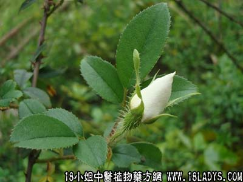

金缨根(中草药名称:金缨子)(科目:蔷薇科)

别名：塘莺簕。
植物名：金缨子。
生长环境：本品为扳援状有刺灌木。生于旷野、丘陵、小坡或路旁灌木丛中。
分布：我国、日本和美国均有栽培、盛产于我国南部。
入药部分：干根。
采集期：全年采根、秋冬采果实。
自采地点：山岗、丘陵。
性味：性平、味淡微甘。
功能：除痰火、止泻痢。
主治、用量和用法：1、痰火核，配伍用；2、痰火疬，配伍用；3、白带：干根约8钱、清水三碗，煎成一碗，温服；4、痔疮：用根4两，清水煎，熏洗患处。
验方1：（治痰火核方）金缨根2两、五爪龙2两，将两药炒透，加净猪瘦肉2两，清水七碗煎成两碗，温服。
（方解）金缨根除痰火，治结核，五爪龙化气除痰，两味合用，有解郁结，除痰火之效。
（方歌）治痰火核此方珍，五爪龙同金缨根，煎汤还加猪瘦肉，解郁除痰立法新。
验方2：（治痰火疬方）金缨根5钱、水老鼠簕根5钱、白花灯笼根5钱、五爪龙根5钱、清水四碗，煎成碗半，温服。
（方解）本方在前方基础上，加水老鼠簕，白花灯笼根，取其去痰火、消坚块，化气消肿，仅此两味亦可自成一方。与前方合用，降火除痰，化气质功力较大。
（方歌）治痰火疬四般根，金缨鼠簕白花灯，五爪龙同入药用，除痰降火法堪珍。
参考资料：《广东中医》（1959年12月）金缨子根治疗子宫脱垂8例，疗效很好，服法：生金缨子根4两，加水煎4至5小时，去渣取汁，加甜酒或三花酒2至4钱，一次混合冲服，最好晚上睡前服。
《广东省中医验方交流汇编》治小便不通方：金缨子4两、川滑石1两，煎水内服。
治水肿方：生金缨子树根（去粗皮）切碎称一两五钱，鹿含草3钱、小香（极小团结者）七枚，用水二碗半煎到半碗，复被静卧趁温时服下，片刻，小便即通，肿亦消。此症全身浮肿，小便不通，甚则两足赤紫透明，疼痛异常，不能步履，诸药不效，急宜用此方。
治飞丝入目外治方：金缨子叶捶烂和乳汁贴之。
《湖南省中医单方验方第二辑》治腰痛因于闪腰跌扑伤者：金缨子树根、盛灵仙根各等分，切薄片，入红糖热就泡服。又治手指生蛇头疔肿痛方：金缨3钱，蛇总管3钱，硼砂少许，以两位水熬，加硼砂少许，以脱脂棉蘸敷患处。